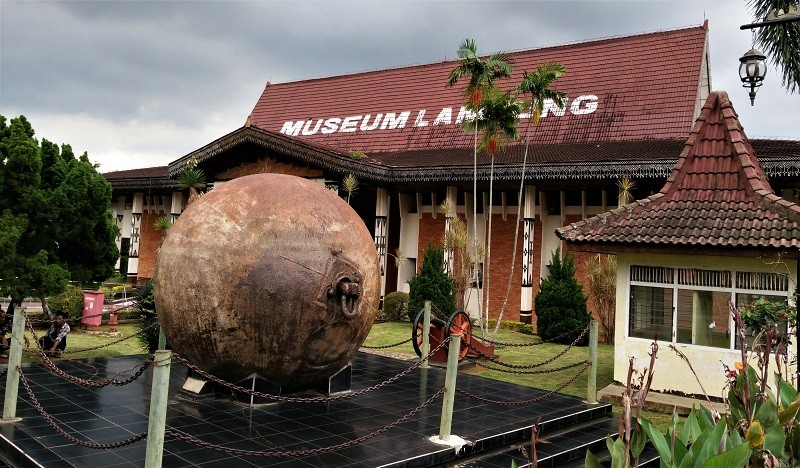

Sejarah
Provinsi Lampung lahir pada tanggal 18 Maret 1964 dengan ditetapkannya Peraturan Pemerintah Nomor 31964 yang kemudian menjadi Undang-undang Nomor 14 tahun 1964. Sebelum itu Provinsi Lampung merupakan Karesidenan yang tergabung dengan Provinsi Sumatera Selatan.
Kendatipun Provinsi Lampung sebelum tanggal 18 maret 1964 tersebut secara administratif masih merupakan bagian dari Provinsi Sumatera Selatan, namun daerah ini jauh sebelum Indonesia merdeka memang telah menunjukkan potensi yang sangat besar serta corak warna kebudayaan tersendiri yang dapat menambah khasanah adat budaya di Nusantara yang tercinta ini. Oleh karena itu pada zaman VOC daerah Lampung tidak terlepas dari incaran penjajahan Belanda.
Tatkala Banten dibawah pimpinan Sultan Agung Tirtayasa (1651-1683) Banten berhasil menjadi pusat perdagangan yang dapat menyaingi VOC di perairan Jawa, Sumatra dan Maluku. Sultan Agung ini dalam upaya meluaskan wilayah kekuasaan Banten mendapat hambatan karena dihalang-halangi VOC yang bercokol di Batavia. Putra Sultan Agung Tirtayasa yang bernama Sultan Haji diserahi tugas untuk menggantikan kedudukan mahkota kesultanan Banten.
Dengan kejayaan Sultan Banten pada saat itu tentu saja tidak menyenangkan VOC, oleh karenanya VOC selalu berusaha untuk menguasai kesultanan Banten. Usaha VOC ini berhasil dengan jalan membujuk Sultan Haji sehingga berselisih paham dengan ayahnya Sultan Agung Tirtayasa. Dalam perlawanan menghadapi ayahnya sendiri, Sultan Haji meminta bantuan VOC dan sebagai imbalannya Sultan Haji akan menyerahkan penguasaan atas daerah Lampung kepada VOC. Akhirnya pada tanggal 7 April 1682 Sultan Agung Tirtayasa disingkirkan dan Sultan Hajidinobatkan menjadi Sultan Banten.
Dari perundingan-perundingan antara VOC dengan Sultan Haji menghasilkan sebuah piagam dari Sultan Haji tertanggal 27 Agustus 1682 yang isinya antara lain menyebutkan bahwa sejak saat itu pengawasan perdagangan rempah-rempah atas daerah Lampung diserahkan oleh Sultan Banten kepada VOC yang sekaligus memperoleh monopoli perdagangan di daerah Lampung.
Pada tanggal 29 Agustus 1682 iring-iringan armada VOC dan Banten membuang sauh di Tanjung Tiram. Armada ini dipimpin oleh Vander Schuur dengan membawa surat mandat dari Sultan Haji dan ia mewakili Sultan Banten. Ekspedisi Vander Schuur yang pertama ini ternyata tidak berhasil dan ia tidak mendapatkan lada yag dicari-carinya. Agaknya perdagangan langsung antara VOC dengan Lampung yang dirintisnya mengalami kegagalan, karena ternyata tidak semua penguasa di Lampung langsung tunduk begitu saja kepada kekuasaan Sultan Haji yang bersekutu dengan kompeni, tetapi banyak yang masih mengakui Sultan Agung Tirtayasa sebagai Sultan Banten dan menganggap kompeni tetap sebagai musuh.
Sementara itu timbul keragu-raguan dari VOC apakah benar Lampung berada dibawah Kekuasaan Sultan Banten, kemudian baru diketahui bahwa penguasaan Banten atas Lampung tidak mutlak. Penempatan wakil-wakil Sultan Banten di Lampung yang disebut "Jenang" atau kadangkadang disebut Gubernur hanyalah dalam mengurus kepentingan perdagangan hasil bumi (lada). Sedangkan penguasa-penguasa Lampung asli yang terpencar-pencar pada tiap-tiap desa atau kota yang disebut "Adipati" secara hirarkis tidak berada dibawah koordinasi penguasaan Jenang Gubernur. Jadi penguasaan Sultan Banten atas Lampung adalah dalam hal garis pantai saja dalam rangka menguasai monopoli arus keluarnya hasil-hasil bumi terutama lada, dengan demikian jelas hubungan Banten-Lampung adalah dalam hubungan saling membutuhkan satu dengan lainnya.
Selanjutnya pada masa Raffles berkuasa pada tahun 1811 ia menduduki daerah Semangka dan tidak mau melepaskan daerah Lampung kepada Belanda karena Raffles beranggapan bahwa Lampung bukanlah jajahan Belanda. Namun setelah Raffles meninggalkan Lampung baru kemudian tahun 1829 ditunjuk Residen Belanda untuk Lampung. Dalam pada itu sejak tahun 1817 posisi Radin Inten semakin kuat, dan oleh karena itu Belanda merasa khawatir dan mengirimkan ekspedisi kecil di pimpin oleh Assisten Residen Krusemen yang menghasilkan persetujuan bahwa : 1. Radin Inten memperoleh bantuan keuangan dari Belanda sebesar f. 1.200 setahun. 2. Kedua saudara Radin Inten masing-masing akan memperoleh bantuan pula sebesar f. 600 tiap tahun. 3. Radin Inten tidak diperkenankan meluaskan lagi wilayah selain dari desa-desa yang sampai saat itu berada dibawah pengaruhnya. Tetapi persetujuan itu tidak pernah dipatuhi oleh Radin Inten dan ia tetap melakukan perlawananperlawanan terhadap Belanda.
Oleh karena itu pada tahun 1825 Belanda memerintahkan Leliever untuk menangkap Radin Inten, namun dengan cerdik Radin Inten dapat menyerbu benteng Belanda dan membunuh Liliever dan anak buahnya. Akan tetapi karena pada saat itu Belanda sedang menghadapi perang Diponegoro (1825 - 1830), maka Belanda tidak dapat berbuat apa-apa terhadap peristiwa itu. Tahun 1825 Radin Inten meninggal dunia dan digantikan oleh Putranya Radin Imba Kusuma. Setelah Perang Diponegoro selesai pada tahun 1830 Belanda menyerbu Radin Imba Kusuma di daerah Semangka, kemudian pada tahun 1833 Belanda menyerbu benteng Radin Imba Kusuma, tetapi tidak berhasil mendudukinya. Baru pada tahun 1834 setelah Asisten Residen diganti oleh perwira militer Belanda dan dengan kekuasaan penuh, maka Benteng Radin Imba Kusuma berhasil dikuasai.
Radin Imba Kusuma menyingkir ke daerah Lingga, namun penduduk daerah Lingga ini menangkapnya dan menyerahkan kepada Belanda. Radin Imba Kusuma kemudian di buang ke Pulau Timor. Dalam pada itu rakyat dipedalaman tetap melakukan perlawanan, "Jalan Halus" dari Belanda dengan memberikan hadiah-hadiah kepada pemimpin-pemimpin perlawanan rakyat Lampung ternyata tidak membawa hasil. Belanda tetap merasa tidak aman, sehingga Belanda membentuk tentara sewaan yang terdiri dari orang-orang Lampung sendiri untuk melindungi kepentingan-kepentingan Belanda di daerah Telukbetung dan sekitarnya. Perlawanan rakyat yang digerakkan oleh putra Radin Imba Kusuma sendiri yang bernama Radin Inten II tetap berlangsung terus, sampai akhirnya Radin Inten II ini ditangkap dan dibunuh oleh tentara-tentara Belanda yang khusus didatangkan dari Batavia.
Sejak itu Belanda mulai leluasa menancapkan kakinya di daerah Lampung. Perkebunan mulai dikembangkan yaitu penanaman kaitsyuk, tembakau, kopi, karet dan kelapa sawit. Untuk kepentingan-kepentingan pengangkutan hasil-hasil perkebunan itu maka tahun 1913 dibangun jalan kereta api dari Telukbetung menuju Palembang. Hingga menjelang Indonesia merdeka tanggal 17 Agustus 1945 dan periode perjuangan fisik setelah itu, putra Lampung tidak ketinggalan ikut terlibat dan merasakan betapa pahitnya perjuangan melawan penindasan penjajah yang silih berganti. Sehingga pada akhirnya sebagai mana dikemukakan pada awal uraian ini pada tahun 1964 Keresidenan Lampung ditingkatkan menjadi Daerah Tingkat I Provinsi Lampung.